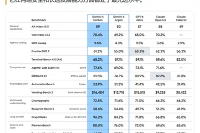
其他
其他全部主題
Google旗下DeepMind周二（10/27）發表新一代世界模型Genie 4，可利用AI生成能夠自由探索、即時互動的虛擬世界，並進一步強化物理模擬、人物行為及聲音生成能力。使用者不僅能在其中移動，還能透過文字指令改變天氣、加入人物或物件，讓虛擬世界隨著操作持續變化。
The announcement came alongside parent company Alphabet's third-quarter earnings report, which saw revenue grow 25% year over year to $127.6 billion.
Google與甲骨文宣布合作，計畫2027年起在甲骨文雲端基礎架構（OCI）提供Google自行設計的AI加速晶片TPU
Following improvements made to Chrome's enhanced autofill last year that included your name, passport number, email address, and physical addresses sourced from your Google Accounts and services like Google Wallet, the feature is now expanding. Starting today, Chrome's enhanced a
Nvidia just released a free speech-to-text model that can transcribe up to 40 languages, but it only works on recordings, not live audio, so it’s a big step for meeting and medical transcription tools while still leaving real-time use to rivals like ElevenLabs.
Anthropic工程主管取消Coding面試，直言Claude解題更強、傳統測驗失焦。他看好資淺工程師：AI降低執行門檻，衝勁比年資重要。
早安。
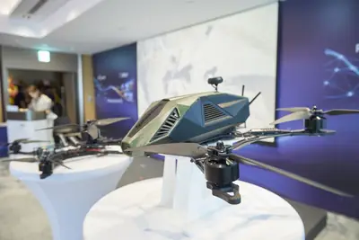
NVIDIA每年推新一代晶片，運算效能提升的同時，散熱需求也會激增。
AI晶片巨頭競逐高階算力，測試介面迎來規格升級潮，半導體測試介面廠中華精測表示，AI特用晶片（ASIC）、高功率老化測試等需求增加，預計2027年第1季整體產能將較20...
為因應AI浪潮帶來的應用需求，SpaceX大舉擴充AI運算基礎設施，宣布取得400億美元GPU及相關設備融資承諾，將主要用於導入NVIDIA新一代Vera Rubin平台，預計2027...
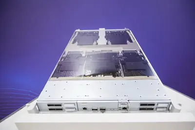
NVIDIA執行長黃仁勳前腳才離開德國，後腳便首度造訪哈薩克，並表態支持這個人口約2,100萬的中亞國家成為歐洲的AI工廠。難道歐洲沒有自己的AI工廠嗎？當人口約2,300...
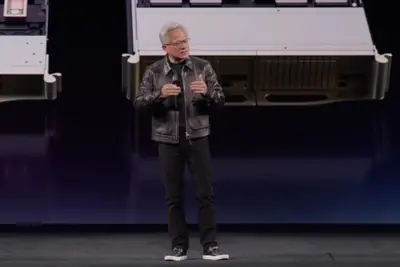
過去幾年，人工智慧（AI）帶動的半導體需求主要集中於先進製程與高階封裝領域，包括3奈米、2奈米、CoWoS及高頻寬記憶體（HBM）等技術，均成為產業關鍵字。...
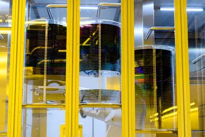
馬來西亞海關表示，日前查獲價值約4,950萬令吉（約1,211萬美元）的先進人工智慧（AI）晶片。幕後主導者為一走私集團，且相似案件不只一樁。
IT之家 10 月 29 日消息，微软发言人向《商业内幕》透露，公司本周向超过四分之一的员工提供自愿离职补偿方案，但预计最终接受的人数不超过 3,000 人。 当地时间 28 日，微软 CFO 艾米 · 胡德在内部备忘录中重申了这一判断，并回应员工对方案出台原因的疑问。“我知道，有些员工不明白我们为什么要在本周推出自愿离职方案。我们的初衷是让想离开微软的员工能够自主决定如何离职。考虑到公司提供的职业发展机会， 我们预计接受方案的人会非常少 。” 这份备忘录是胡德每季度向员工发送的财报邮件。微软公布季度业绩时，她通常都会向内部员工通报经营情况。 以往的邮件
IT之家 10 月 29 日消息，市场调查机构集邦咨询（TrendForce）昨日（10 月 28 日）发布博文，预估 2026 年苹果首款折叠 iPhone Duo 出货量约为 500 万部， 上市第一年即占据全球折叠手机出货量约 24.8% 市场份额。 集邦咨询估计，2026 年全球折叠手机出货量将微幅成长 0.5%。 该机构收集和分析了 iPhone Duo 使用者的首批反馈，认为呈现“体验惊艳、适应成本不低”的双重特征：折叠展开后的分屏操作与屏幕观感受好评，但部分应用黑边、按键布局和指纹解锁体验仍需适应。 技术层面，iPhone Duo 的低可见
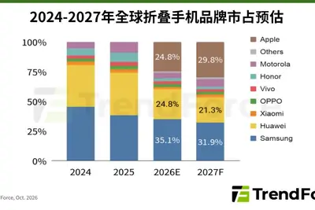
IT之家 10 月 29 日消息，苹果在今天的特别活动中正式推出了首款触控屏 MacBook Pro（配备 PROLED XDR 显示屏的 MacBook Pro），系列产品 10 月 30 日 9 点接受预购，11 月 6 日发售，22,999 元起，IT之家随附官方商店地址（ 点此访问 ）。 系列笔记本可选 14.2/16.3 英寸版本，前者尺寸为 21.63 厘米 x31.08 厘米 x1.50 厘米，重 1.38 千克；后者尺寸为 24.42 厘米 x35.55 厘米 x1.60 厘米，重 1.82 千克。笔记本 C 面仍配备指纹识别触控 ID，
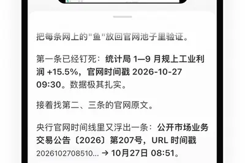
IT之家 10 月 29 日消息，彭博社今天（10 月 29 日）发布博文，报道称 美国半导体公司美满电子（Marvell）计划收购数据中心光通信设备制造商朗美通（Lumentum），目前双方正在磋商谈判，交易最快可能于下周宣布。 IT之家援引博文介绍，双方尚未达成最终协议，若该交易达成，有望成为人工智能硬件供应链领域的一笔重量级并购。 从体量看，Lumentum 当前市值约 830 亿美元 （IT之家注：现汇率约合 5,545.26 亿元人民币） ，迈威尔市值约 2,210 亿美元 （现汇率约合 1.48 万亿元人民币） 。彭博称，这笔潜在交易凸显了
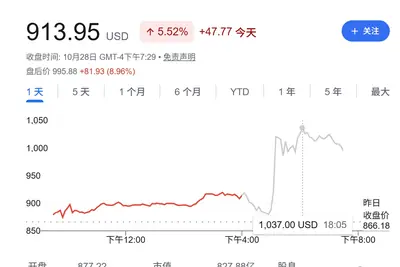
In general, LLM performance is incredibly multidimensional. There's no guarantee of a fixed ordering where the model that is best at math is also the model that's best at jokes. Despite that complexity, much of the variation in performance is explained by just a single variable:
IT之家 10 月 29 日消息，科技媒体 NeoWin 今天（10 月 29 日）发布博文，报道称在韩国召开的 Steam Indie Connect 活动中， Valve 回应 Steam 新品节（Steam Next Fest）“AI 垃圾游戏”争议 ，称公司正研究解决方案，但不会禁止开发者使用 AI 工具。 Steam 业务负责人 Tom Giardino 表示，Valve 不希望成为“守门人”，替开发者决定可以使用哪些创作工具。他认为，如果一款游戏只依赖容易被复制的单一机制，就很难长期立足， 并认为开发者应持续加入源自自身视角的新功能、个性与创
IT之家 10 月 29 日消息，微软今天（10 月 29 日）面向 Windows 11 26H1 用户，推送 10 月可选更新 KB5127653，用户安装后版本号升至 Build 28000.3365。 Windows 11 版本 26H1 (KB5127653) 的更新日志也分为逐步推送和正常推送两部分。前者包含将分阶段推出的功能，而后者则会在所有设备更新后立即提供所列的增强功能。以下是更新日志： 逐步推出 [文件资源管理器] 新增！本次更新调整了预览窗格处理从网络下载的文件的方式。对于 HTML 文件，新增的“仍然预览”按钮允许您确认警告并预览
IT之家 10 月 29 日消息，据路透社报道，两位知情人士透露，美国司法部（DOJ）已就英伟达以 129.3 亿美元 （IT之家注：现汇率约合 863.86 亿元人民币） 收购开源平台 Hugging Face 的交易将如何影响人工智能领域的竞争展开问询。与此同时，反垄断执法人员正在继续对这家芯片设计商的行为进行长达数年的调查。 知情人士表示， 司法部近期的问询涉及英伟达的并购、对外投资、销售模式，以及该公司是否对其客户施加了压力 。关于 Hugging Face 交易，司法部官员重点关注该并购是否会让英伟达掌控 AI 领域的核心分发枢纽。 英伟达此前
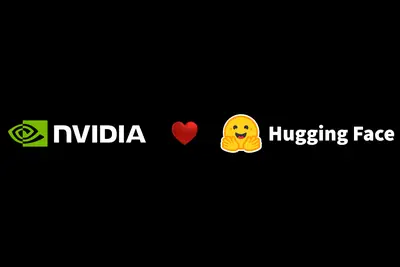
Asked about AI and the trend of college students booing tech CEOs at graduation ceremonies, Instagram head Adam Mosseri acknowledged in an interview that a lot of people really don't like AI, and it's not just young people and creatives. Appearing on the Colin and Samir podcast t
IT之家 10 月 29 日消息，据路透社今天（29 日）凌晨报道，Anthropic 在本月 15 日致美国加州州长加文 · 纽森的信中建议，政府应有权向法院申请禁令， 阻止对公众构成“严重风险”的 AI 模型发布 。 这与 Anthropic 此前提出的监管建议一致。 Anthropic 自身也曾受到政府限制。今年 6 月，美国政府以国家安全为由，要求 Anthropic 立即限制外国用户访问具备网络安全能力的 Mythos 5 和 Fable 5 模型。然而随后，美国商务部又宣布撤销该命令。 今年 9 月，纽森召集 AI 专家小组，研究制定 AI
IT之家 10 月 29 日消息，据 TechCrunch 报道，谷歌正将旗下 AI 搜索体验中的广告业务推向国际市场，押注生成式 AI（Generative AI）即使在其核心搜索广告业务增长放缓的情况下，也能开启新的收入机会。 Alphabet 在周三举行的第三季度财报电话会议上宣布了这一消息。财报显示，该季度公司营收达 1,276 亿美元 （IT之家注：现汇率约合 8,525.01 亿元人民币） ，同比增长 25%。然而，由于搜索广告业务增速持续回落，财报公布后 Alphabet 股价下跌 8%。 谷歌首席商务官菲利普 · 辛德勒（Philipp
IT之家 10 月 29 日消息，Anthropic 于 10 月 27 日发布研究报告，称其通过一个未公开发布的内部 Claude 研究模型，在 Chrome、Safari、Android、Windows 和 Linux 中发现漏洞， 并将多个漏洞串联为 5 条可实际运行的攻击链。相关漏洞均已按协调披露流程报告厂商并修复。 其中最受关注的是 Chrome，IT之家援引博文介绍，Anthropic 向谷歌提交的报告共产生 62 个严重或高危 CVE，包括 13 个沙箱逃逸漏洞和 21 个可控制网页渲染进程的漏洞，修复已随 Chrome 156 发布。 研
IT之家 10 月 29 日消息，科技媒体 Windows Central 昨日（10 月 28 日）发布博文，报道称部分 LG 智能电视用户反馈已收到服务终止通知， 微软已针对包括 LG 在内的所有电视，将停止运营 Copilot 服务。 IT之家曾于 2025 年 12 月报道，LG 电视在升级推送的 webOS 系统更新后， 自动安装了微软 Copilot AI 应用程序，且系统未提供任何卸载或移除选项 。 LG 公司随后回应表示出现在电视上的 Copilot 图标并非传统的原生应用程序，只是一个网页浏览器快捷方式，目的是“提升客户便利性”。用户点
Microsoft said it made $10 billion in revenue from commercial arrangements with OpenAI, including revenue-sharing payments, in the quarter ending September 30. It underscores the still-enormous financial dependency of the partnership.
The MPC Sample Key isn't even formally announced yet, but Akai is already showing off what the modding community is cooking up through vibe coding. Akai has decided to embrace the explosion of hackers and custom firmware developers by giving them early access to the device, which
From a new smart alarm clock to an Alexa-powered 3D map of your home, here’s what’s new from Amazon, including prices and release dates.
Across a business, any number of AI platforms, systems, and tools may be at work simultaneously—for example, AI-powered customer platforms, conversational assistants, and workflow and process automation tools. Each one is sophisticated, advanced, and quick to respond. But, when s
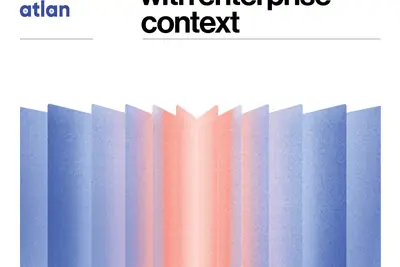
IT之家 10 月 28 日消息，据央视新闻今日报道，上交所最新数据显示，截至 10 月 27 日，共 186 家科创板公司完成三季报披露，合计营收 4266.76 亿元，同比增长 31.54%， 合计净利润 389.53 亿元，同比增长 57.39% 。其中，14 家科创 50 公司收入、净利润贡献度分别占 29%、47%。 IT之家从报道中获悉，截至 10 月 27 日，已有 14 家科创 50 成分公司披露 2026 年三季报，已披露公司合计实现营业收入 1231.70 亿元、净利润 183.03 亿元，同比分别增长 25.99%、46.17%。以
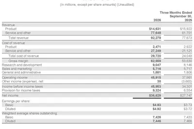
The frontier lab is lifting the curtain on how users spend money on its models ahead of a planned IPO.
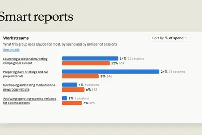
The PHP scare may have faded from your feed, but the cleanup is far from over. Last week, two critical bugs in the open source language behind roughly 70% of websites left organizations scrambling to fix their systems, with some taking sites offline until the vulnerabilities coul
Apple finally revealed its new MacBook M5 Pro and Max with a touchscreen OLED display, bringing the best features from the iPhone to its laptops.
Nearly two years after LG and Samsung announced at CES 2025 that their latest smart TVs would include access to Microsoft's Copilot, the company is ending support for the AI assistant's functionality on all TVs this year, according to a report by Windows Central. The news comes n
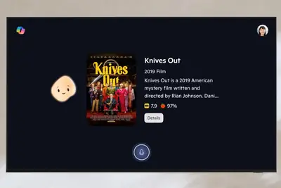
To experiment with AI’s predictive skills, I let Codex loose on a fantasy team. It tried to bench Erling Haaland at first, but it soon learned the error of its ways.
IT之家 10 月 29 日消息，苹果 24 英寸新款 iMac 现已在京东开启预购，新品升级 M6 芯片，设计与旧款没有差别，定价 12499 元起， 国补后到手价 10999 元起 。 外观方面，新款 iMac 沿袭上一代外观，提供银色、蓝色、绿色、粉色等配色可选。搭载 24 英寸 4.5K 分辨率屏幕，最高亮度 500nits，支持 P3 广色域和 10bit 色深，提供纳米纹理玻璃选项。 规格方面，新款 iMac 搭载 M6 芯片，双雷雳接口机型为 10 核 CPU、10 核 GPU 及双 16 核 NPU；四雷雳接口型号采用 12 核 CPU、
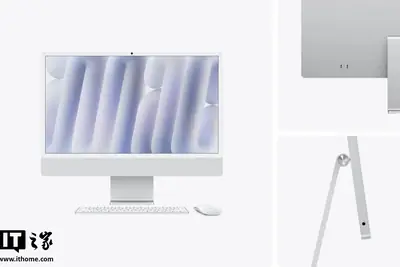
A subsidiary of Elon Musk's xAI is offering to buy up homes in a Mississippi neighborhood, as long as residents don't join a lawsuit targeting the company's nearby data center and power plant, according to a report from The Guardian. A realtor going door-to-door in the Southaven
OpenAI and ServiceNow expand their partnership to bring OpenAI models and agents into ServiceNow and ServiceNow workflows into ChatGPT and Codex.